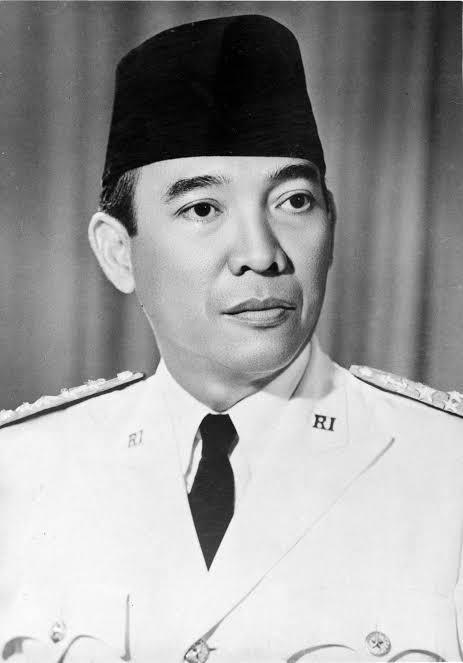

Selamat Datang di Artikel ku
Saya ingin bercerita sedikit mengenai diri saya.
Di sekolah, saya mengikuti kegiatan paskibra. Awalnya ikut kegiatan ini hanya sekedar iseng saja saat masa SMP dulu. Namun setelah menekuninya hingga saat ini, Alhamdulillah saya sering mendapat penghargaan ketika mengikuti ajang perlombaan. Saya sangat suka bermain game online untuk mengisi waktu luang. Tidak seperti anak remaja pada umumnya yang suka main hingga larut malam, saya lebih suka menghabiskan waktu untuk tinggal di rumah. Mungkin karena sifatku yang kurang suka dengan keramaian.
Selain bermain game, saya juga suka menonton film, baik film sejarah, anime, maupun film-film barat. Saya juga suka mendengarkan musik. Rasanya tenang diriku ketika mendengarkan musik yang disuka sambil bernyanyi, ya walaupun suaraku tidak enak didengar hehe. Terlepas dari sifatku yang kurang suka dengan keramaian, terkadang saya juga gampang emosian. Saya juga orangnya pelupa, pemalas, dan kurang pandai dalam bergaul. Tetapi jika saya mengikuti suatu organisasi, saya tidak mau hanya ikut saja tanpa menghasilkan apa-apa, ya contohnya kegiatan paskibra tadi.
Namun karena sifatku yang pemalas, itu berdampak dengan cita-citaku. Awalnya saya ingin sekali
mengabdi kepada Negara, dengan ikut serta menjadi bagian dari Tentara Nasional Indonesia (TNI).
Tetapi sepertinya cita-cita itu telah pupus, karena saya jarang latihan baik fisik maupun
akademik. Jadi jika ditanya tentang cita-citaku sekarang, jujur saya bingung. Dipikiran kepalaku, suatu saat nanti saya hanya ingin membantu banyak orang dengan kemampuan yang ku
punya.
Oh iya, seperti yang saya bilang di awal, saya suka menonton film sejarah. Salah satu sejarah
yang saya suka yaitu tentang presiden pertama Indonesia, Soekarno. Menurutku Bapak proklamator
Indonesia, Soekarno adalah pemimpin yang sangat disegani pada waktu itu. Kepiawaiannya dalam
dunia politik Internasional menjadi semangat untuk masyarakat Asia lainnya yang terjajah di masa
lalu untuk merdeka. Kemerdekaan Indonesia menjadi inspirasi negara negara Asia-Afrika untuk membebaskan diri dari kolonialisme dan imperialisme.
gambar soekarno
Mungkin sekian segitu saja yang dapat saya paparkan. Mohon maaf bila terdapat kesalahan dalam penulisan dari artikel ini, harap di maklum karena ini kali pertama saya bercerita seperti ini. Wassalamualaikum Wr.Wb
kembali ke profile